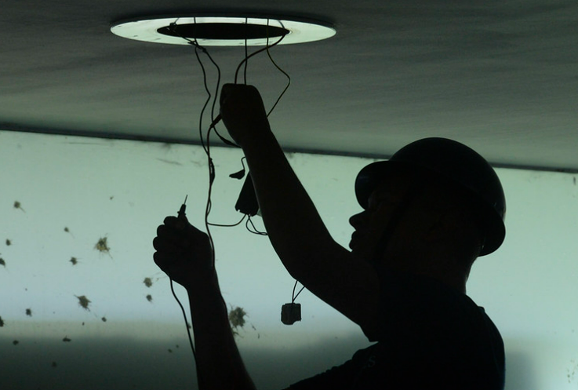
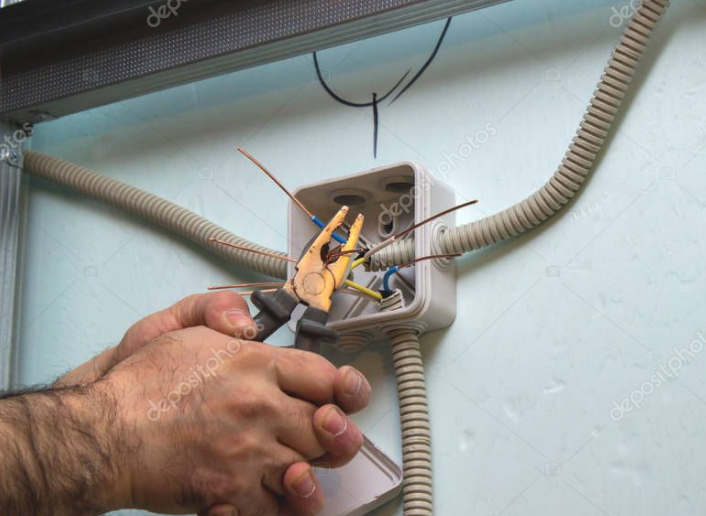

Esta Norma Regulamentadora - NR estabelece os requisitos e condições mínimas objetivando a implementação de medidas de controle e sistemas preventivos, de forma a garantir a segurança e a saúde dos trabalhadores que, direta ou indiretamente, interajam em instalações elétricas e serviços com eletricidade. Ela se aplica às fases de geração, transmissão, distribuição e consumo, incluindo as etapas de projeto, construção, montagem, operação, manutenção das instalações elétricas e quaisquer trabalhos realizados nas suas proximidades, observando-se as normas técnicas oficiais estabelecidas pelos órgãos competentes e, na ausência ou omissão destas, as normas internacionais cabíveis.
As intervenções em instalações elétricas com tensão igual ou superior a 50 Volts em corrente alternada ou superior a 120 Volts em corrente contínua somente podem ser realizadas por trabalhadores que atendam ao que estabelece o item 10.8 (habilitação, qualificação, capacitação e autorização dos trabalhadores) desta Norma - NR10.

Os trabalhadores de que trata o item anterior devem receber treinamento de segurança para trabalhos com instalações elétricas energizadas, com currículo mínimo, carga horária e demais determinações estabelecidas no Anexo II desta NR
.

O MTE desenvolveu um Manual de auxílio na interpretação e aplicação da NR10, onde podemos aprofundar nossos conhecimentos sobre segurança com eletricidade.
Não é difícil entender a importância para o instalador fotovoltaico em fazer a capacitação e treinamento para conhecer e aplicar a NR10, já que o mesmo trabalha a maior parte do tempo com sistemas ligados e gerando energia.
Busque se capacitar em NR10, antes de começar a trabalhar, pois sua vida é seu bem mais importante.
Para a NR10, considera-se:
- São entendidos como trabalhadores qualificados aqueles que receberam instrução específica em cursos reconhecidos e autorizados pelo Ministério da Educação e Cultura, com currículo aprovado e que comprovaram aproveitamento mediante exames e avaliação pré-estabelecida e por essa razão receberam um diploma, um certificado. Nesta categoria se encaixam, alem dos profissionais de nível superior e nível médio, com profissões regulamentadas, as pessoas que adquiriram conhecimento que lhes permitiu ter uma ocupação profissional, os eletricistas montadores, eletricistas de manutenção, e outros.
- Para que as pessoas qualificadas sejam consideradas profissionais habilitados devem preencher as formalidades de registro nos respectivos conselhos regionais de fiscalização do exercício profissional. É o conselho profissional quem estabelece as atribuições e responsabilidades de cada qualificação em função dos cursos, cargas horárias e matérias ministradas. São os conselhos profissionais que habilitam os profissionais com nível médio e superior (técnicos, tecnólogos e engenheiros). A regularidade do registro junto ao conselho competente é que resulta na habilitação.
- É trabalhador capacitado aquele que embora não tenha freqüentado cursos regulares ou reconhecidos pelo sistema oficial de ensino, tornou–se apto ao exercício de atividades específicas mediante a aquisição de conhecimentos e desenvolvimento de habilidades, na forma das alíneas abaixo, que atenda às seguintes condições, simultaneamente:
- Receba capacitação sob orientação e responsabilidade de profissional habilitado e autorizado, Ou seja, a aquisição de conhecimentos e o desenvolvimento das capacidades deverá acontecer sob responsabilidade de um profissional legalmente habilitado conforme definido acima e que tenha sido também autorizado pela própria empresa da forma com estará estabelecido mais adiante. Este profissional legalmente habilitado e autorizado é que estabelecerá as limitações de atividades a serem realizadas pelo capacitado. As atividades de instrução e ensino devem constar das atribuições profissionais do responsável por essa capacitação.
- Trabalhe sob a responsabilidade de profissional habilitado e autorizado. Ou seja, o trabalhador capacitado só poderá exercer as atividades sob responsabilidade de um profissional legalmente habilitado e autorizado como veremos adiante, não sendo necessário que este profissional seja o mesmo que o capacitou.
- A capacitação só terá validade para a empresa que o capacitou e nas condições estabelecidas pelo profissional habilitado e autorizado responsável pela capacitação, ou seja, entende-se que a capacitação deverá ser realizada por profissional habilitado e autorizado pela empresa tomadora dos serviços ou por sua delegação, contudo o trabalhador só poderá exercer sua capacitação, dentro dos limites estabelecidos no processo de capacitação, na empresa que o capacitou e sob a responsabilidade de um profissional legalmente habilitado e por ela igualmente autorizado. Nada impede que outro profissional legalmente habilitado e autorizado promova uma avaliação e ratifique, avalize a capacitação, tornando-se naturalmente responsável por essa avaliação do processo de capacitação desenvolvido por outro legalmente habilitado até mesmo de outra empresa.
- São considerados autorizados os trabalhadores qualificados ou capacitados e os profissionais habilitados, com anuência formal da empresa.
O treinamento é dividido em básico, com 40 horas aula e destinado a todo e qualquer trabalhador. E o segundo módulo, também com 40 horas aula, chamado complementar, tem o primeiro como pré-requisito e se destina aos trabalhadores envolvidos com o Sistema Elétrico de Potência ou que atuam nas suas proximidades.
Os treinamentos devem ser ministrados por instrutores com comprovada proficiência no assunto, sob a responsabilidade de profissional qualificado ou legalmente habilitado em segurança no trabalho, e cumprir a seguinte matriz:
CURSO BÁSICO - SEGURANÇA EM INSTALAÇÕES E SERVIÇOS COM ELETRICIDADE: Para os trabalhadores autorizados - carga horária mínima - 40h. Programação Mínima:
- 1. introdução à segurança com eletricidade.
- 2. riscos em instalações e serviços com eletricidade:
- a) o choque elétrico, mecanismos e efeitos;
- b) arcos elétricos; queimaduras e quedas;
- c) campos eletromagnéticos.
- 3. Técnicas de Análise de Risco.
- 4. Medidas de Controle do Risco Elétrico:
- a) desenergização.
- b) aterramento funcional (TN / TT / IT); de proteção; temporário;
- c) equipotencialização;
- d) seccionamento automático da alimentação;
- e) dispositivos a corrente de fuga;
- f) extra baixa tensão;
- g) barreiras e invólucros;
- h) bloqueios e impedimentos;
- i) obstáculos e anteparos;
- j) isolamento das partes vivas;
- k) isolação dupla ou reforçada;
- l) colocação fora de alcance;
- m) separação elétrica.
- 5. Normas Técnicas Brasileiras - NBR da ABNT: NBR-5410, NBR 14039 e outras;
- 6) Regulamentações do MTE:
- a) NRs;
- b) NR-10 (Segurança em Instalações e Serviços com Eletricidade);
- c) qualificação; habilitação; capacitação e autorização.
- 7. Equipamentos de proteção coletiva.
- 8. Equipamentos de proteção individual.
- 9. Rotinas de trabalho - Procedimentos.
- a) instalações desenergizadas;
- b) liberação para serviços;
- c) sinalização;
- d) inspeções de áreas, serviços, ferramental e equipamento;
- 10. Documentação de instalações elétricas.
- 11. Riscos adicionais:
- a) altura;
- b) ambientes confinados;
- c) áreas classificadas;
- d) umidade;
- e) condições atmosféricas.
- 12. Proteção e combate a incêndios:
- a) noções básicas;
- b) medidas preventivas;
- c) métodos de extinção;
- d) prática;
- 13. Acidentes de origem elétrica:
- a) causas diretas e indiretas;
- b) discussão de casos;
- 14. Primeiros socorros:
- a) noções sobre lesões;
- b) priorização do atendimento;
- c) aplicação de respiração artificial;
- d) massagem cardíaca;
- e) técnicas para remoção e transporte de acidentados;
- f) práticas.
CURSO COMPLEMENTAR - SEGURANÇA NO SISTEMA ELÉTRICO DE POTÊNCIA (SEP) E EM SUAS PROXIMIDADES. É pré-requisito para freqüentar este curso complementar, ter participado, com aproveitamento satisfatório, do curso básico definido anteriormente. Carga horária mínima - 40h - Programação Mínima:
- 1 - Organização do Sistema Elétrico de Potencia - SEP.
- 2 - Organização do trabalho:
- a) programação e planejamento dos serviços;
- b) trabalho em equipe;
- c) prontuário e cadastro das instalações;
- d) métodos de trabalho; e
- e) comunicação.
- 4. Condições impeditivas para serviços.
- 5. Riscos típicos no SEP e sua prevenção:
- a) proximidade e contatos com partes energizadas;
- b) indução;
- c) descargas atmosféricas;
- d) estática;
- e) campos elétricos e magnéticos;
- f) comunicação e identificação; e
- g) trabalhos em altura, máquinas e equipamentos especiais.
- 6. Técnicas de análise de Risco no S E P
- 7. Procedimentos de trabalho - análise e discussão.
- 8. Técnicas de trabalho sob tensão:
- a) em linha viva;
- b) ao potencial;
- c) em áreas internas;
- d) trabalho a distância;
- d) trabalhos noturnos; e
- e) ambientes subterrâneos.
- 9. Equipamentos e ferramentas de trabalho (escolha, uso, conservação, verificação, ensaios).
- 10. Sistemas de proteção coletiva .
- 11. Equipamentos de proteção individual.
- 12. Posturas e vestuários de trabalho.
- 13. Segurança com veículos e transporte de pessoas, materiais e equipamentos.
- 14. Sinalização e isolamento de áreas de trabalho.
- 15. Liberação de instalação para serviço e para operação e uso.
- 16. Treinamento em técnicas de remoção, atendimento, transporte de acidentados.
- 17. Acidentes típicos - Análise, discussão, medidas de proteção.
- 18. Responsabilidades.